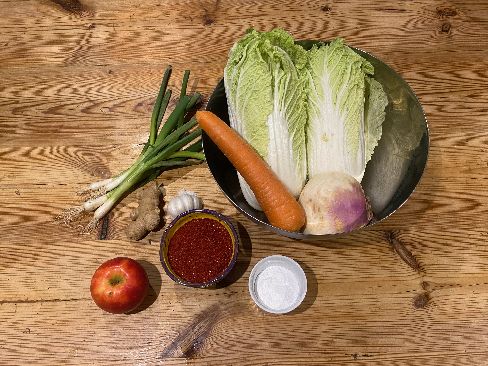
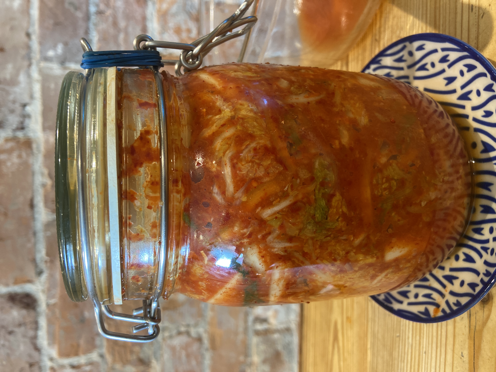
About the Workshop
Fermentation can seem scary and alien, but it's actually our oldest tool to make food last longer, taste better, and become safer and healthier!
Our aim is to give you the skills and knowledge to confidently create your own fermented foods, full of gut-healthy vitality, flavour, colour and at a fraction of the cost of store bought versions.
This workshop is a hands-on exploration of the microbial world of fermentation. We'll be delving into the ancient practise of lacto-fermentating vegetables.
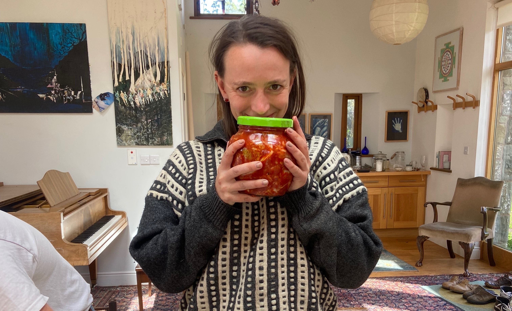
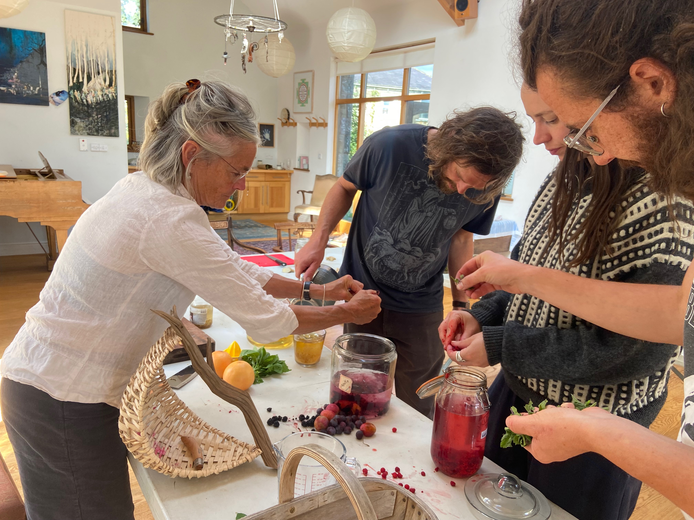
It's easier than you think!
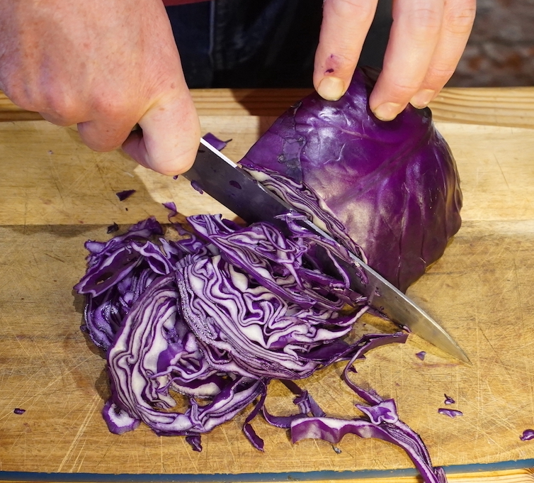
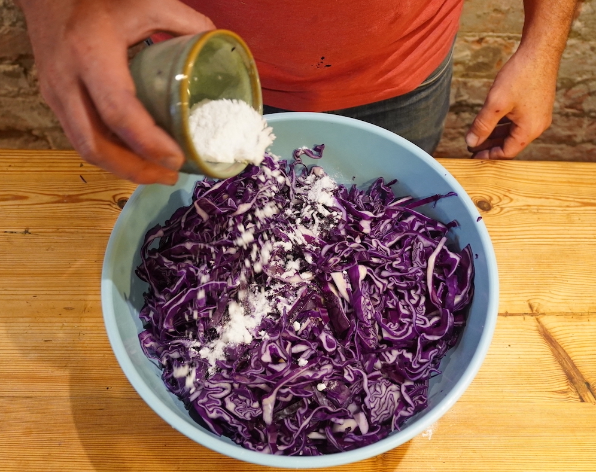
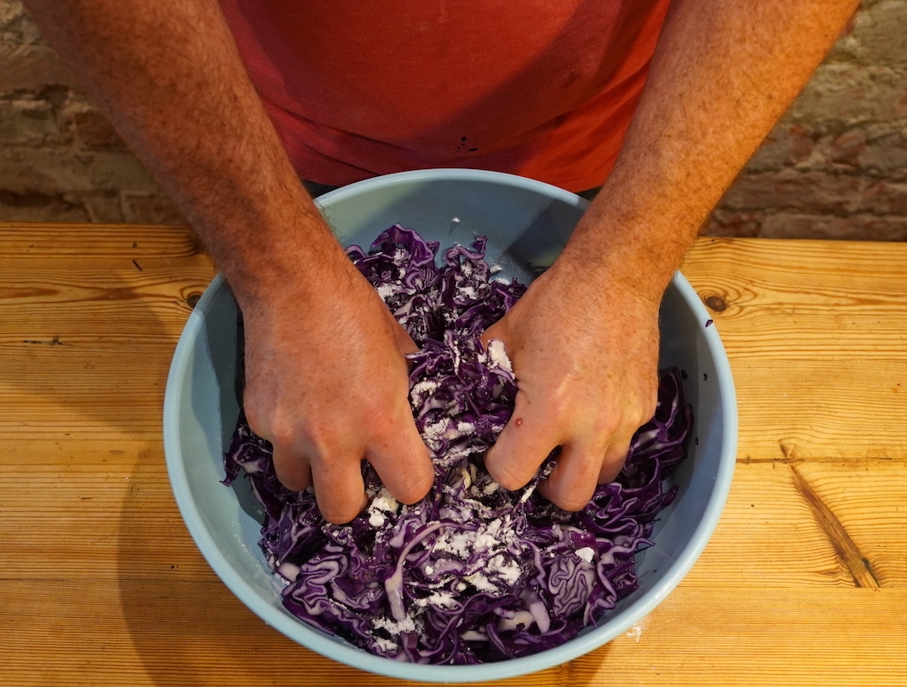
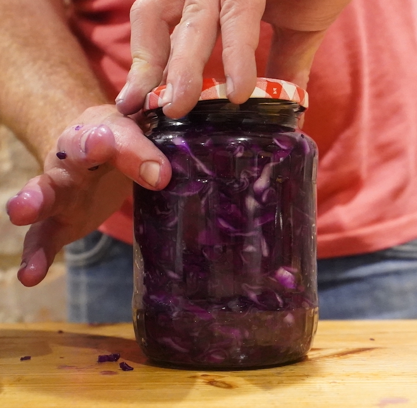
Course Highlights
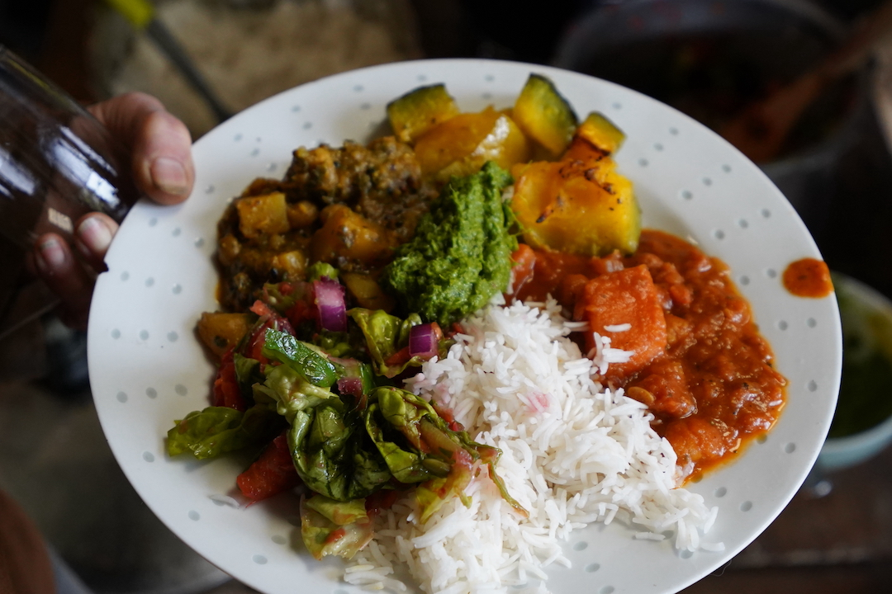
A Living Lunch
Experience the weird and wonderful colours, flavours, smells, fizzes and crunches of fermentation. There will be an array of fermented foods and beverages made here at the community, on offer for lunch.
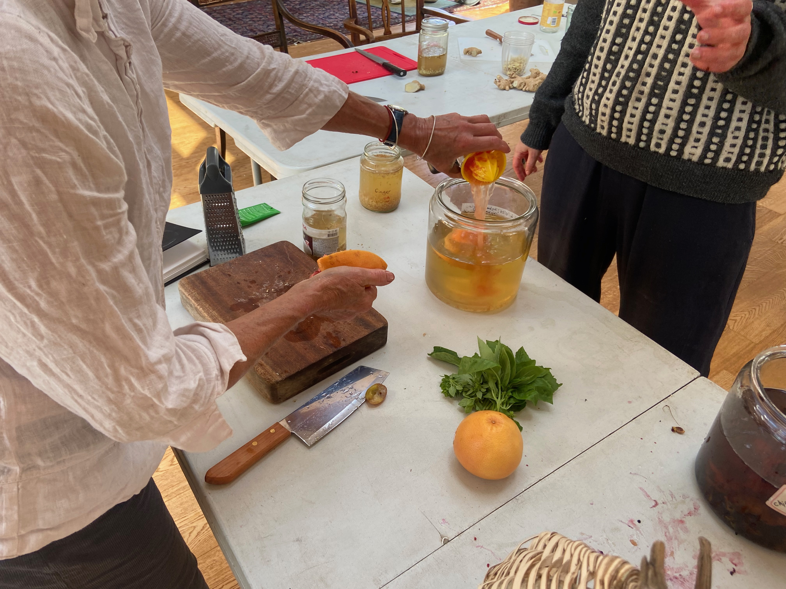
Hands On
We'll be heading onto the land to pick ingredients and combine these with store bought ones. Chopping, weighing, salting and packing jars so that you can take home your own Sauerkraut, Kimchi, and Hot Sauce.
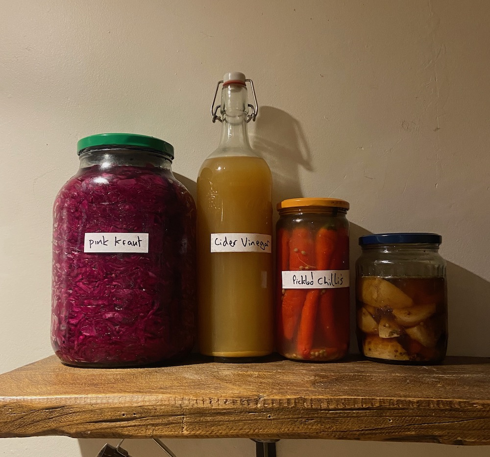
Confidence & Safety
You'll get exact recipes to follow but also the confidence to experiment and get creative with fermentation. Learn how to keep your ferments free of contamination.
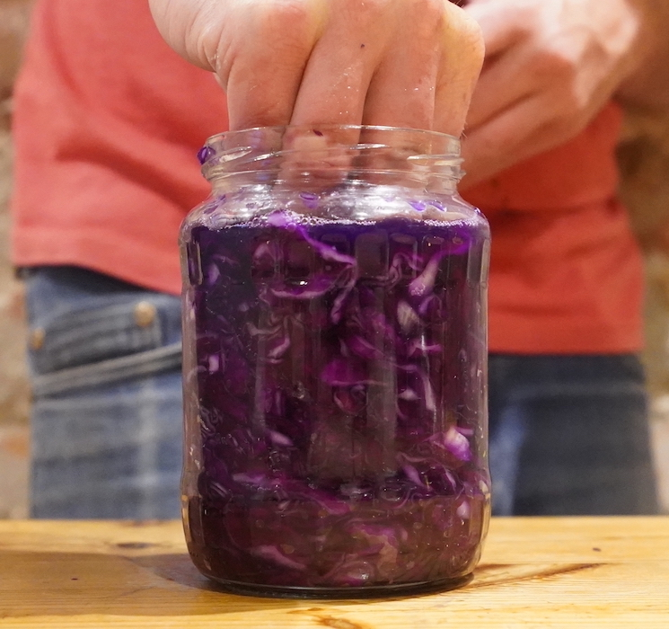
Science in Action
We'll demystify the invisible work of Lactobacillus and learn how to create perfect environments for your ferments to thrive.
The Location
Kin Hill Studio
Surrounded by 80 acres of land, Kin Hill is made up of veg growing areas, fields, hedge rows, semi-ancient woodland, the Kingwater river and a swimming lake. At the centre of our land is the studio, where our workshop will take place. A calm and beautiful space with wooden floors, high ceilings and tall windows to take in the surrounding Cumbrian hills as we work.
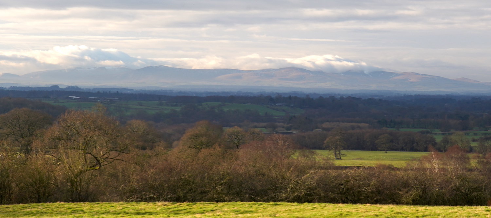
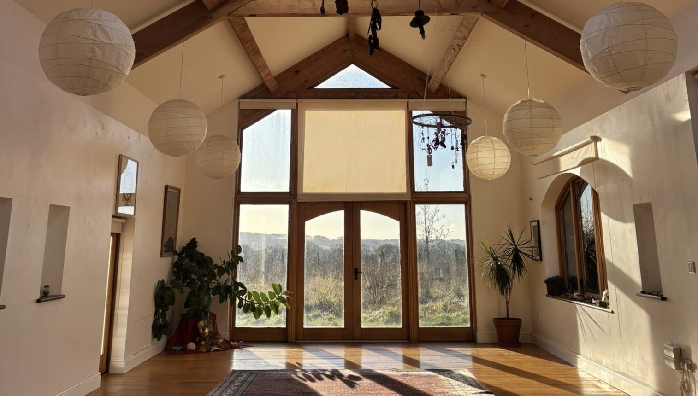